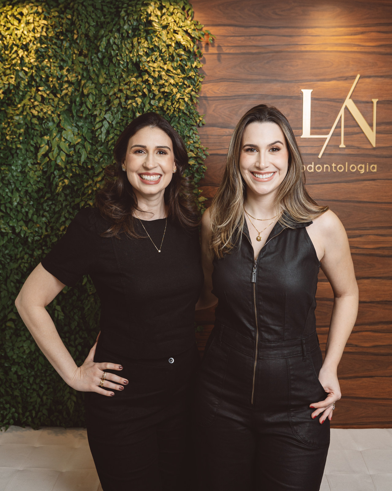
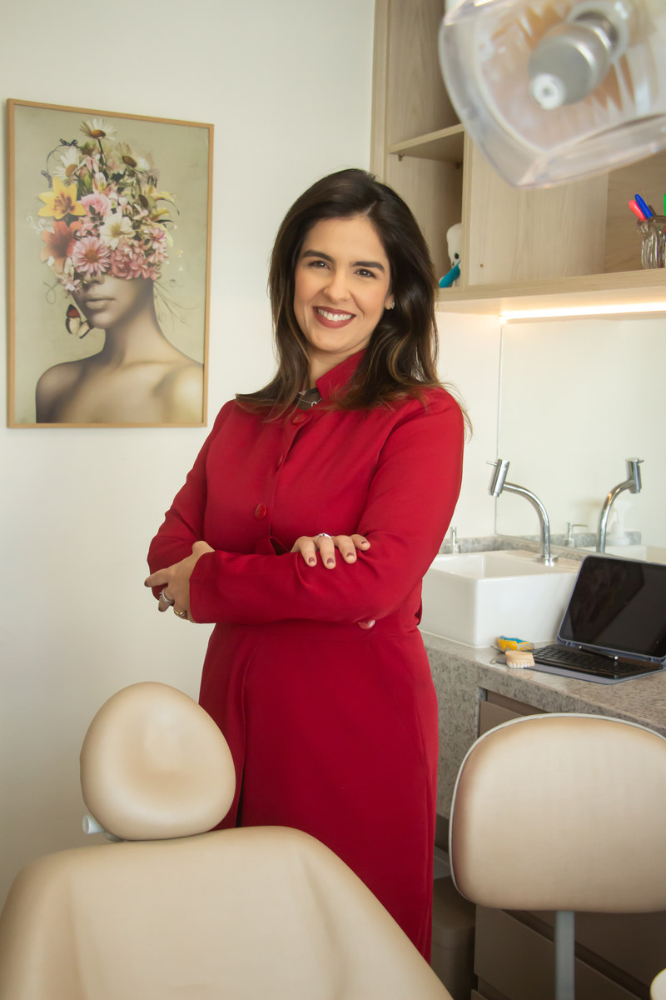
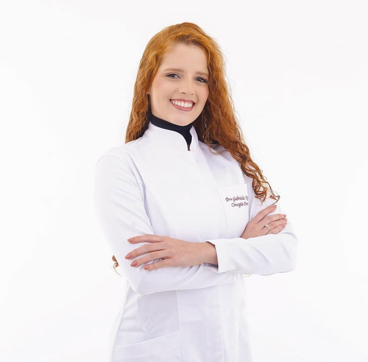
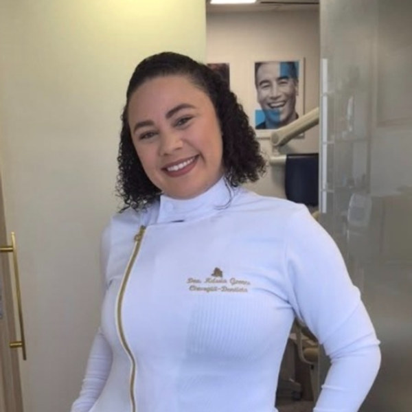
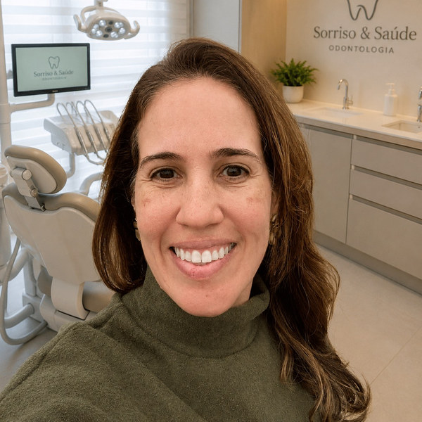

⁄ Tamarineira, Recife — desde 2006
Sua autoestima pode
começar no seu sorriso.
Odontologia integrada, restaurativa e estética, com ética e profissionalismo para corrigir, restaurar e devolver a confiança ao seu sorriso.
Atendimento particular — a LN Odontologia não possui convênio com o SUS.
⁄ Nossa história
Milhares de sorrisos transformados desde 2006.
Nossa clínica foi criada para proporcionar uma odontologia integrada, restaurativa e estética, visando corrigir, restaurar e melhorar seu sorriso.
Nossa dedicação em fornecer uma experiência com ética e profissionalismo vem sendo amplamente reconhecida. Sabemos que o valor verdadeiramente único da nossa clínica está na dedicação de toda a equipe. Conte conosco como seus parceiros de jornada rumo a um sorriso mais confiante — entre em nosso consultório sabendo que você está em boas mãos.
Fale com a nossa equipe →⁄ Serviços em destaque
Um cuidado completo, do preventivo ao estético.
Cada especialidade da LN tem sua própria dedicação — escolha a que faz sentido para você e fale direto com a equipe.
Ortodontia
Aparelhos e alinhadores para cada fase da vida, do diagnóstico ao sorriso alinhado.
Falar sobre isso →Odontopediatria
Acompanhamento cuidadoso desde a infância, com paciência e linguagem que a criança entende.
Falar sobre isso →Dentística & Facetas
Facetas de resina, lentes de contato dental e clareamento — estética natural, sem exageros.
Falar sobre isso →Implantodontia
Reposição de dentes com implantes, devolvendo função e naturalidade ao sorriso.
Falar sobre isso →Endodontia & Periodontia
Tratamento de canal e cuidado das gengivas, tratando a raiz do problema.
Falar sobre isso →Cirurgia & DTM
Procedimentos cirúrgicos e tratamento da disfunção temporomandibular.
Falar sobre isso →Sedação com Óxido Nitroso
Para quem sente ansiedade no consultório — tratamento com mais tranquilidade.
Falar sobre isso →Necessidades Especiais
Atendimento humanizado e adaptado para pacientes com necessidades especiais.
Falar sobre isso →⁄ Programa de Tratamento Continuado
Escolha o ritmo de cuidado ideal para o seu sorriso.
Do atendimento pontual ao acompanhamento contínuo — condições e valores são combinados diretamente com a equipe, sob medida para o seu caso.
Sessão pontual
Avulsa
Para quem tem uma necessidade específica agora: uma avaliação, um procedimento, uma urgência. Cuidado de excelência, sem vínculo contínuo.
- Avaliação e diagnóstico completo
- Procedimento sob medida
- Orientações de manutenção
Acompanhamento trimestral
Plano 90 dias
Ideal para quem está em tratamento ativo ou quer manter a saúde bucal em dia com constância, sem perder o ritmo do cuidado.
- Retornos programados a cada trimestre
- Manutenção preventiva incluída
- Prioridade de agenda
- Acompanhamento direto com a equipe
Acompanhamento semestral
Plano 180 dias
Para tratamentos mais longos, como ortodontia e reabilitações estéticas, com continuidade e uma equipe que acompanha cada etapa.
- Retornos programados a cada semestre
- Plano de tratamento de longo prazo
- Prioridade de agenda
- Acompanhamento direto com a equipe
⁄ Nossa equipe
Profissionais competentes e atenciosas.

Dra. Luiza Magalhães
Mestre em Ortodontia, apaixonada por tecnologia aplicada para devolver sorrisos saudáveis.
Dra. Nathalia Lacet
Especialista em Dentística e Periodontia, constrói sorrisos naturalmente belos.

Flávia Cavalcanti
Endodontia e Periodontia

Gabriela Figueiroa
Odontopediatria

Kássia Gomes
Clínica Geral

Marluce Moreira
Implantodontia
⁄ Depoimentos
As experiências de quem já passou pela LN.
“Profissionais competentes, atenciosas, que promovem um cuidado com a saúde e tratamento odontológico de excelência.”
Andrea Vasconcelos
“Dra Nath é aquela pessoa que te entrega confiança, tranquilidade e amor no cuidado com o paciente. Cheguei em uma situação de emergência e fui muito bem acolhida. Ela é um conjunto de competência e carinho. Recomendo!”
Gerlany Lima
“Excelente dentista pediátrica. Dra Luiza consegue envolver a criança no processo, explicando tudo de forma clara e gentil, sempre combinando com antecedência, de modo que a criança permite a realização dos procedimentos.”
Raquel Machado
“Experiência maravilhosa, nunca fui tão bem atendido. Consultório incrível com tecnologia avançada. Foi maravilhoso!”
Felipe Antônio
⁄ Agende sua consulta
Vamos cuidar do seu sorriso?
Fale com a equipe da LN Odontologia pelo WhatsApp e marque seu horário. Atendimento particular, em Tamarineira, Recife.
Agendar consulta no WhatsApp- Endereço
- Estrada do Arraial, 2483 — Tamarineira, Recife/PE
- Telefone / WhatsApp
- (81) 99913-1135
- ln_odontologia@outlook.com
- @lnodontologia_
- Convênios
- Atendimento particular — sem convênio com o SUS